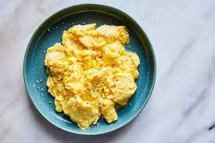

Scrambled Eggs Recipes

Descriptions
This scramble eggs recipes will take an approximately 6 min total. With a 2 min prep time and 4 min cook, it should yeild 1 serving.
The following recipes is also been reccomended by the top michielan star cheffs.
Ingredients
- 2 eggs
- 1 teaspoon mayonnaise or salad dressing
- 1 teaspoon water (Optional)
- 1 teaspoon margarine or butter
- 1 pinch slat and pepper for taste
Steps
- Whisk together the eggs in a cup or small bowl
- Add mayonnaise and water and continue to stir with a fork
- Turn on the pan and wait till its hot
- Then pour in the eggs, and stir constantly as they cook
- Make sure to fold the eggs gently on it self after it starts to firm up a bit
- Remove the eggs to a plate when they are set, but still moist (Do not over cook)
- Add salt and papper (Mkae sure not to add before eggs are on the plate)